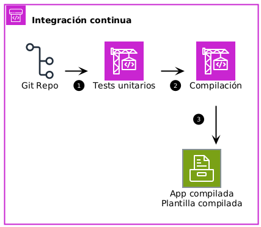

DevOps
o por qué puedes trabajar menos (si quieres…)
Pedro Prieto Alarcón
Presentación y demo
https://github.com/pedroprieto/jornada-fpxempresa-2025
DevOps

DevOps
- Cambios organizativos
- Equipos de 2 pizzas
- Multidisciplinares
- Metodologías ágiles
- Herramientas
- Automatización
- Tests
- Patrones y arquitecturas
- Microservicios
DevOps
Microservicios
- Agilidad
- Seguridad
- Escalado independiente
- Alta disponibilidad
- Desacoplamiento
- Independencia tecnológica
Infraestructura como Código
Serverless
- No hay servidores que mantener
- Escalado automático
- No hay que pagar por servidores sin usar
- Alta disponibilidad y tolerancia a errores
Monitorización y logging

Seguridad
- DevSecOps
- Principio del mínimo privilegio
- No almacenar credenciales en código
- Utilizar secretos y variables de entorno
- Herramientas de monitorización
- Detección automática de vulnerabilidades en dependencias
- Seguridad preventiva
- Seguridad paliativa
Veamos un ejemplo sencillo…

Control de versiones

Desarrollo Guiado por Test
- Escribir los tests (pruebas unitarias) antes que el código
- Una vez creada la prueba, se implementa el código necesario para superarla
- Por último, se refactoriza el código escrito para eliminar duplicidades y hacerlo más limpio y eficiente
Integración continua: GitHub Actions

Integración Continua I: Tests unitarios
Tests unitarios
test:
steps:
- name: Clonar repositorio
- name: Instalar dependencias
- name: Lanzar tests unitarios
Integración continua: secretos y variables

Integración Continua II

Compilación
build-and-package:
steps:
- name: Clonar repositorio
- name: Instalar dependencias de producción únicamente
- name: Instalar SAM CLI
- name: Compilar aplicación
- name: Configurar credenciales AWS
- name: Empaquetar aplicación para testeo y compilar plantilla
- name: Almacenar plantilla de testeo compilada para el siguiente paso
with:
name: packaged-testing.yaml
- name: Empaquetar aplicación para producción y compilar plantilla
- name: Almacenar plantilla de producción compilada para el siguiente paso
with:
name: packaged-prod.yaml
Entrega Continua

Despliegue para testeo
deploy-testing:
outputs:
ApiUrl: ${{ steps.GetUrl.outputs.ApiUrl }}
steps:
- name: Instalar SAM CLI
- name: Obtener plantilla de test almacenada en el paso anterior
with:
name: packaged-testing.yaml
- name: Configurar credenciales AWS
- name: Despliegue de aplicación en infraestructura de test
- name: Obtener URL de la API desplegada para almacenarla en el paso posterior
Integración Continua III: Tests de integración
Tests de integración
integration-test:
env:
ApiUrl: ${{needs.deploy-testing.outputs.ApiUrl}}
steps:
- name: Clonar repositorio
- name: Instalar dependencias
- name: Ejecutar test de integración
Fallo en la aplicación

Despliegue en producción
Despliegue en producción
deploy-prod:
environment: testenv
steps:
- name: Instalar SAM CLI
- name: Obtener plantilla de producción almacenada en el paso anterior
with:
name: packaged-prod.yaml
- name: Configurar credenciales AWS
- name: Despliegue de aplicación en infraestructura de producción
- name: Borrar infraestructura de test
¡¡MUCHAS GRACIAS!!
pedroprietoalarcon@gmail.com